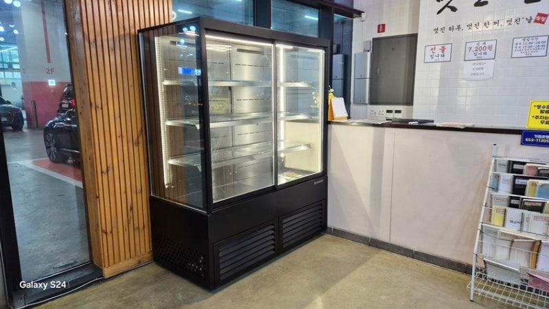
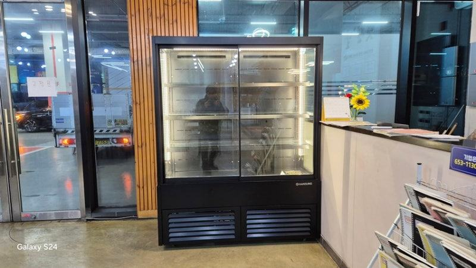
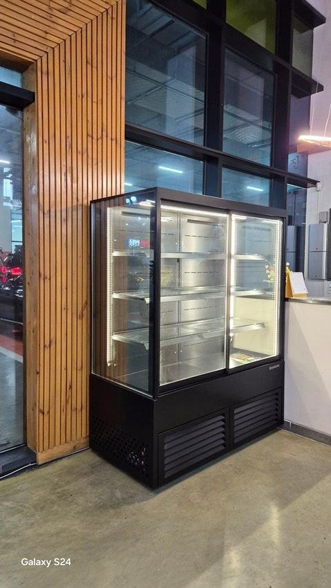
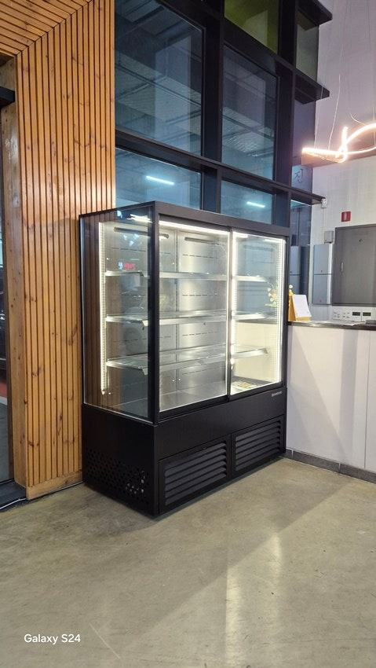
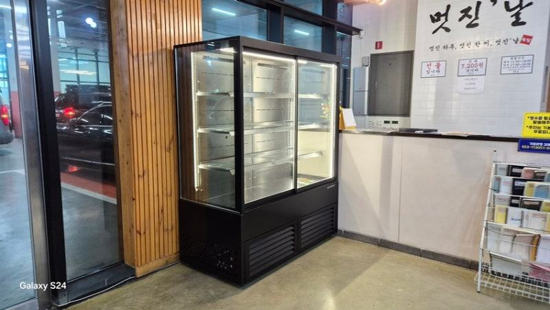
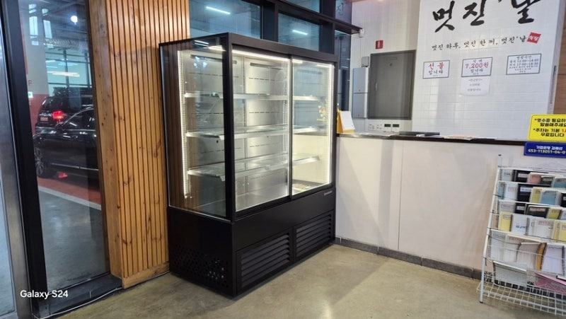
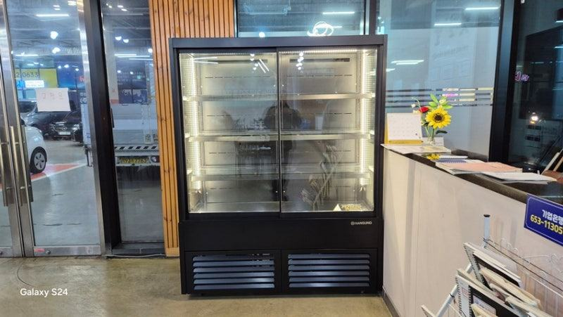
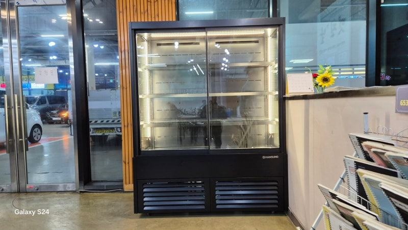
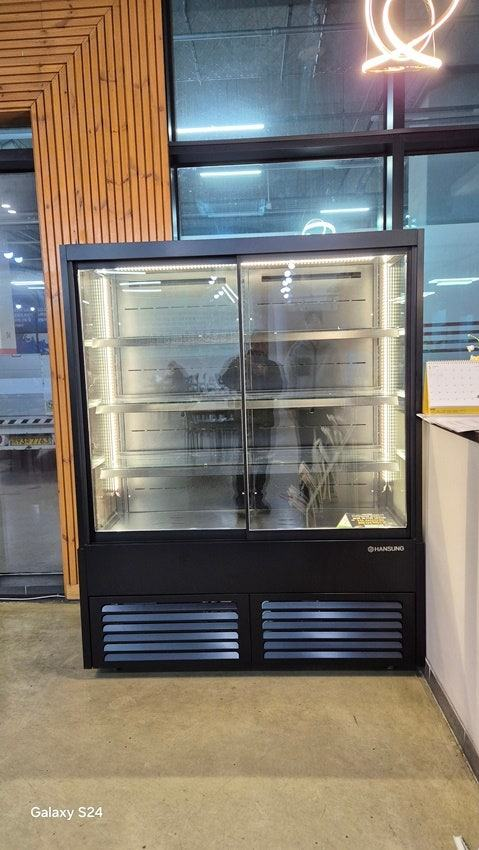
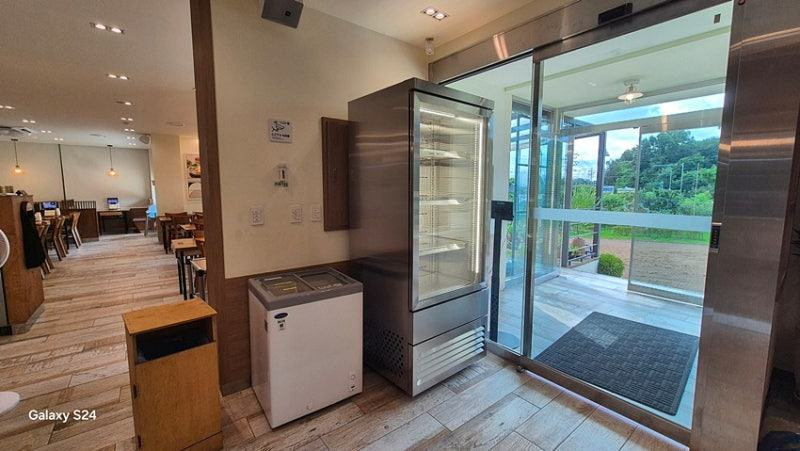

와인(음료)쇼케이스
업소용음료수냉장고 냉동겸용, 한 대로 갈지 나눌지

냉동 상품이 아이스크림이나 얼음컵 몇 가지 정도라면 냉장·냉동 칸이 나뉜 겸용 한 대로 공간을 아낄 수 있습니다. 냉동 상품 비중이 크거나 손님이 냉동 칸 문을 자주 연다면 냉장과 냉동을 따로 두는 편이 온도 관리와 고장 대응 모두 수월합니다.
안녕하세요. 음료와 냉동 진열 장비를 매장에 맞춰 제작하는 한성쇼케이스입니다.
카페나 소형 편의점, 무인 매장을 준비하시는 사장님들이 자주 물으십니다. "음료 냉장고에 아이스크림 칸도 같이 있으면 좋겠는데, 그런 것도 되나요?" 매장은 좁은데 팔고 싶은 상품은 냉장과 냉동에 걸쳐 있으니 한 대로 해결하고 싶으신 거죠.
냉동겸용은 분명 공간을 아끼는 방법입니다. 다만 냉장과 냉동은 필요한 온도도, 성에가 생기는 정도도, 손님이 문을 여는 패턴도 달라서 맞는 매장과 맞지 않는 매장이 갈립니다.
오늘은 업소용음료수냉장고를 냉동겸용으로 할지, 냉장과 냉동을 따로 둘지 판단하는 기준을 정리해 드리겠습니다.
1. 냉동겸용이 맞는 매장
음료가 주력이고 냉동 상품은 아이스크림, 얼음컵, 냉동 디저트 몇 종류 정도인 매장이라면 겸용 한 대가 효율적입니다.
벽면 하나에 냉장과 냉동을 나란히 두면 손님이 음료와 아이스크림을 한자리에서 고르게 되고, 매장 폭도 아낄 수 있습니다.
테이크아웃 카페처럼 얼음컵 음료를 함께 파는 매장, 작은 무인 매장처럼 장비 대수를 줄여야 하는 곳에서 많이 고르는 구성입니다.
- 냉동 상품 종류와 하루 판매량을 적어 보세요.
- 냉장과 냉동 칸의 비율을 먼저 정하세요.
2. 따로 두는 편이 나은 매장
냉동 만두, 밀키트, 냉동 육류처럼 냉동 상품이 매출의 큰 부분을 차지한다면 냉동 장비를 따로 두는 편이 낫습니다.
냉동 칸은 문을 열 때마다 성에가 쌓이기 쉬운데, 손님이 자주 여는 매장에서 겸용 장비의 냉동 칸이 작으면 온도 회복이 버거워집니다.
고장 대응도 생각해 보세요. 한 대에 냉장과 냉동이 다 들어 있으면 문제가 생겼을 때 두 가지 상품이 함께 위험해집니다.
냉동 상품 손실이 큰 매장일수록 분리하는 쪽이 안전합니다.


3. 냉동 칸에서 꼭 볼 것
겸용이든 분리든 냉동 칸은 성에 관리가 핵심입니다. 자동 제상 기능이 있는지, 유리문이라면 결로 방지 열선이 들어가는지 확인하세요.
냉동 칸 유리에 김이 서리면 손님이 상품을 못 보고 문을 여러 번 열게 되고, 그만큼 성에가 더 쌓입니다.
문이 놓으면 저절로 닫히는 구조인지도 중요합니다. 손님이 아이스크림을 고르다 문을 덜 닫고 가는 일이 생각보다 많습니다.
- 자동 제상 기능 여부를 확인하세요.
- 냉동 칸 유리가 결로 방지 유리인지 보세요.
- 문 자동 닫힘 구조인지 확인하세요.
4. 좁은 매장이라면 수직형
매장 폭이 좁아 냉동 장비를 하나 더 둘 자리가 없다면, 바닥 면적을 적게 차지하는 수직형 냉동 쇼케이스를 음료 냉장고 옆에 세우는 방법도 있습니다.
평형 냉동고보다 바닥을 덜 차지하면서 손님 눈높이에 상품을 보여 줄 수 있습니다.
두 장비를 나란히 둘 때는 높이와 프레임 색을 맞춰 한 세트처럼 보이게 하면 매장이 정돈돼 보입니다.
기계실 열이 서로에게 가지 않도록 사이 간격도 확인하세요.
전원도 미리 계획해야 합니다. 냉장과 냉동 장비를 따로 두면 콘센트가 하나 더 필요하고, 두 장비가 같은 회로를 쓰면 여름철 동시에 돌 때 차단기가 떨어질 수 있습니다.
인테리어 단계에서 장비마다 전용 콘센트를 빼 두시면 나중에 멀티탭을 끌어올 일이 없습니다.
체크리스트
- 냉동 상품 종류와 매출 비중
- 냉장·냉동 칸 비율
- 자동 제상과 냉동 칸 결로 방지 유리
- 문 자동 닫힘 구조
- 분리 시 수직형 배치와 기계실 간격
현장에서 자주 보는 경우: 좁은 매장에 냉동 진열을 더해야 할 때
창업을 준비하는 사장님, 카페·베이커리 운영자, 정육점, 편의점 점주님까지 냉동 진열 장비를 찾으시는 분들의 공통 고민은 공간입니다.
이럴 때는 좁은 공간에서도 효율적으로 진열할 수 있는 수직형 냉동쇼케이스를 권해 드리는 경우가 많습니다.
수직형은 손님 시선이 닿는 높이에 상품을 세워 보여 주고, LED 조명으로 상품을 돋보이게 할 수 있습니다.
정밀한 온도 제어와 자동 제상 같은 사용 편의 기능을 갖추고, 매장 크기와 인테리어, 상품 특성에 맞춰 맞춤 제작으로 진행했습니다.










자주 묻는 질문
냉장·냉동 겸용 음료 냉장고도 맞춤 제작이 되나요?
매장 폭과 냉장·냉동 상품 비율을 알려 주시면 칸 구성을 정해 제작 가능 여부를 안내해 드립니다. 냉동 상품 비중이 크면 분리 구성을 함께 제안해 드립니다.
냉동 칸에 성에가 자꾸 생겨요.
문이 덜 닫히거나 손님이 오래 열어 두는 경우에 자주 생깁니다. 패킹 상태와 문 닫힘을 먼저 확인하시고, 자동 제상이 제대로 되는지 점검을 받아 보세요.
설치 후 고장이 나면 어떻게 하나요?
대표전화 031-986-2458로 접수하시면 됩니다. 한성쇼케이스는 전국 240여 개 A/S 센터를 운영하고 있습니다.
매장 조건에 맞춰 만드는 한성쇼케이스
원하시는 제품 사진과 설치할 공간 사진만 보내 주셔도 매장에 맞는 구성을 추천해 드립니다.
- 전국 240여 개 A/S 전담 센터 운영
- 본사 대량 자재 매입으로 품질 대비 합리적인 가격
- 유럽제·삼성 냉각 콤프레셔 적용
- 국내 최초 쇼케이스 전문 디자이너 상주
매장 폭과 원하는 진열 구성을 알려 주세요. 실측과 견적을 안내해 드립니다.
031-986-2458